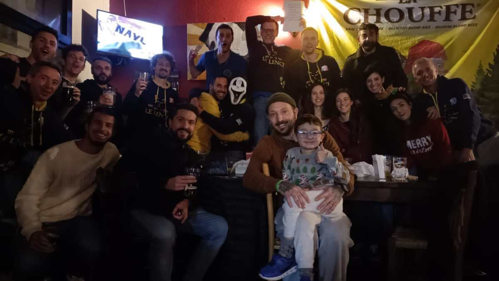

noi non siamo gatti sphinx, noi siamo linci!
Il gruppo delle Linci nasce a Faenza più di dieci anni fa e, come una palla di neve rotolante, non si è più fermato.
Ogni singola lince ha contribuito a rendere il branco quello che è e quello che sarà.
Il gioco più bello del comprensorio: per un anno si segnano gare e chilometri graffiati. Una volta tesserati si finisce in un girone con altre linci, e da lì si comincia.
L'anno lincioso va dal 1° aprile al 31 marzo. Gironi dal 2024.
pelo fulgido in partenza, arruffato all'arrivo!
A volte si esaurisce in poco tempo, a volte tutti lo vogliono, a volte lancia le mode: è il materiale lincesco, giallo e blu. Sfoglia il catalogo 2013–2024 e ordina con il modulo.
Catalogo e ordini ↗
Il modo più semplice? Vieni un lunedì al Linciodromo. Per tesserarti con la Pol. Dil. Santa Lucia e partecipare al campionato lincesco, scrivici.
Scrivici